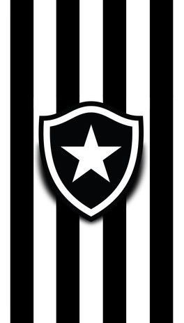

Botafogo de Futebol e Regatas
Fundado em 1904, o Botafogo é um dos clubes mais tradicionais do Rio de Janeiro, conhecido por revelar grandes craques.
Informações
Localização: Rio de Janeiro, RJ
Estádio: Nilton Santos (Engenhão)
Torcida: Cerca de 3 milhões de torcedores
Craques
- Garrincha
- Túlio Maravilha
- Didi
Prêmios
- Brasileirão (2x)
- Torneios internacionais (vários)
Valor Aproximado
R$ 800 milhões